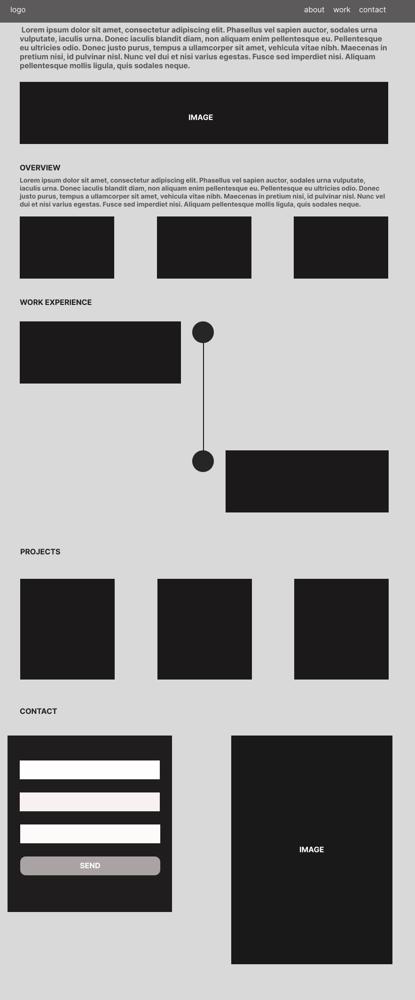

abimael-tavares.com
Reason: Reflects a personal brand focused on showcasing professional work and skills.
To provide a digital showcase for my professional skills, projects, and personal brand, offering easy access for potential employers or collaborators to my work and contact information.
Primary Blue (#0056b3) - Used for headings and accents.
Background Light Grey (#f4f4f9) - For a clean, readable background.
Arial - For body text to ensure readability.
Georgia - For headings to add a touch of elegance.
Desktop View:
Note: These images would be sketches or placeholders for actual wireframes.
Basic styling applied via inline CSS for this document. A separate CSS file will be developed for the actual site.
Will use tools for: